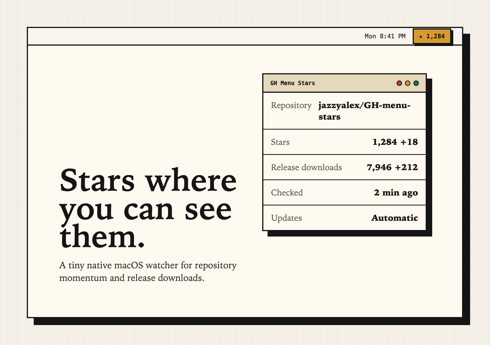
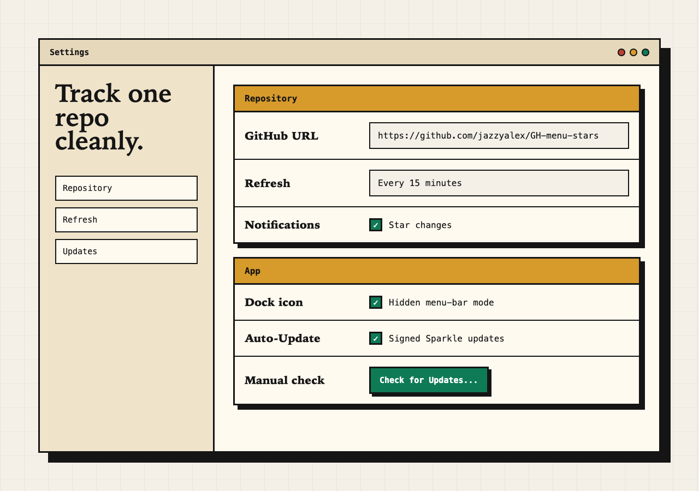

GitHub stars in the macOS menu bar.
Track a repository's star count and release-download totals from the latest 100 releases in a small native app that stays out of the way.
brew tap jazzyalex/gh-menu-stars
brew install --cask gh-menu-stars
Menu-bar signal
Keep the repository's star count visible without a browser tab or dashboard.
Release downloads
See download totals from the latest 100 releases in the same compact dropdown.
No login required
Manual public repository tracking works without a GitHub account.
Signed updates
Sparkle updates are signed, notarized, and enabled by default.
Built for quiet launch watching.
Add a repository, choose a refresh interval, and let the Apple silicon menu-bar app do the watching. Optional GitHub sign-in only helps browse your public repositories faster.
Native macOS app
Apple silicon, macOS Ventura or later
Local settings and Keychain tokens
No backend and no telemetry
